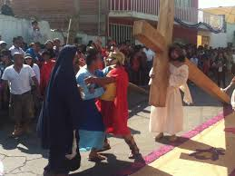

A la Semana Santa se le llamaba en un principio “La Gran Semana”. Ahora se le llama Semana Santa o Semana Mayor y a sus días se les dice días santos. Esta semana comienza con el Domingo de Ramos y termina con el Domingo de Pascua.

Vivir la Semana Santa es acompañar a Jesús con nuestra oración, sacrificios y el arrepentimiento de nuestros pecados. Asistir al Sacramento de la Penitencia en estos días para morir al pecado y resucitar con Cristo el día de Pascua.
Lo importante de este tiempo no es el recordar con tristeza lo que Cristo padeció, sino entender por qué murió y resucitó. Es celebrar y revivir su entrega a la muerte por amor a nosotros y el poder de su Resurrección, que es primicia de la nuestra.
La Semana Santa fue la última semana de Cristo en la tierra. Su Resurrección nos recuerda que los hombres fuimos creados para vivir eternamente junto a Dios.

La Semana Mayor para los católicos es la época en la que se recuerda y celebra los hechos más relevantes en la vida de Jesús de Nazaret (la Pasión, Muerte y Resurrección), comenzando con el llamado Domingo de Ramos y finalizando el Domingo de Resurrección o también llamado de Pascua.
Tiene lugar después de la Cuaresma, el ciclo de cuarenta días que abarca desde el Miércoles de Ceniza hasta el Jueves Santo. Concretamente, la celebración comienza el domingo de Ramos y finaliza el Sábado Santo, aunque en algunos lugares se adelanta al viernes anterior (el de Dolores) y se prolonga hasta el Domingo de Resurrección.

*CRISTIANOS EVANGÉLICOS
Para la iglesia cristiana, la Semana Santa es el tiempo para recordar la muerte de Cristo. Para conmemorarla, se congregan en una jornada de oración y adoración, la cual inicia el Jueves Santo a las 9:00 de la noche y se extiende por 24 horas. En esta reunión se dan cita grupos artísticos y musicales, ya que los cristianos creen que “Dios habita en medio de la alabanza”. Además, para ellos es fundamental la vigilia, es decir, pasar una noche en vela y adorando a Dios.
La jornada de adoración comienza el jueves en la noche y termina el viernes. En estas 24 horas, la comunidad cristiana ora por los enfermos y por las necesidades de cada una de las personas que habitan en este mundo. En cuanto a la comida y la vestimenta, esta comunidad no tiene restricción a la hora de ingerir carnes rojas, ni de lucir determinados atuendos. En lo que respecta a la Semana Santa, indica que conmemoran la muerte del Señor Jesucristo a través de la reflexión individual, para tal fin los días jueves, viernes y domingo tienen encuentros personales.
*TESTIGOS DE JEHOVÁ
Para los testigos de Jehová la Semana Santa comienza el 14 de abril, o 14 de Nisán, y comprende desde la puesta de sol hasta la próxima. De acuerdo con su tradición, la única acción que Jesús mandó a conmemorar en esta fecha es la última cena; por esto, la comunidad se reúne en el Salón del Reino para recordar esta acción, reflexionar sobre ella y el significado de la muerte y resurrección de Jesús, como rey mas no como Dios todopoderoso. En esta ceremonia, al igual que lo hizo Jesús, se reparte el pan y el vino, pero no todos son elegidos de participar de esta cena, pues este honor depende de los méritos de cada persona.
*MORMÓNES
La Semana Santa de los mormónes inicia desde el Lunes Santo, y como suelen hacer muy habitualmente durante muchas semanas del año, se reúnen en lo que llaman la “noche del hogar” para recordar pasajes de la Biblia protestante y, sobre todo, de sus libros sagrados. Son momentos de estar en familia, de compartir, y recordar cómo Jesús, que era un hombre según ellos, sólo un hombre, se hizo Dios también, otro dios, por sus propias fuerzas y comportamiento, según ellos afirman, y esto mismo es lo que ellos también quieren hacer, convertirse en dioses y regentar el gobierno de algunos sistemas solares del universo.
En general, a pesar de sus diferencias de doctrina, es importante considerar que estos días no son el único momento para adorar a Dios y hallar comunión consigo mismo. Sumado a eso, las actividades en la familia también contribuyen a nutrir el alma. Por lo tanto, esta Semana Santa… ¡Ama, agradece y vive en paz!

Durante la temporada vacacional de Semana Santa que se lleva a cabo en el municipio de Atlixco. “Entre las tradiciones que han distinguido a Atlixco es la ‘Procesión del Silencio’ en la comunidad de Nexatengo, la cual es realizada por la cofradía de Nazarenos de la entidad y la ‘Procesión de Engrillados’. Cabe mencionar que ambos eventos son actos de penitencia, fe y de arrepentimiento, mismos que se realizarán el próximo 6 de abril a partir de la seis de la mañana en Santa Lucía Cosamaloapan”, refirió el alcalde.
Tambien representan las obras de teatros sobre, la pasion de cristo durante la crusificacion,para esto se ingresan varios voluntarios que son mas de 50 actores para representar la obras.

Cabe precisar que en la “Procesión de los Engrillados” los participantes se caracterizan por vestir de luto y portar pesadas cadenas de aproximadamente 60 kilos, además de ponerse espinas en el cuerpo. Ellos recorren las principales calle de la ciudad y tienen una preparación, tanto espiritual como física de dos meses. Se realizará también el viernes 6 de abril.
Asimismo, Camacho Corripio invitó a todos los poblanos y personas de otros estados vecinos a admirar el tapete monumental de “Flores de Primavera”, el cual fue hecho con más de 160 mil plantas y con imágenes alusivas a esta temporada de Semana Santa, y otro con diseños representativos de Atlixco.

Agregó que Atlixco cuenta con servicios turísticos, una gran infraestructura hotelera y una amplia gama de zonas donde puede degustar la gastronomía propia de la entidad, desde sus restaurantes hasta la zona de mercados. “Sin duda Atlixco ofrece esta temporada una gran variedad de opciones para toda la familia. Por su ubicación, en un hermoso valle, goza de un clima privilegiado considerado el ‘mejor clima del mundo’, el cual permite el amplio desarrollo de la floricultura.
También cuenta con la fiesta tradicional del Huey Atlixcáyotl (que se lleva a cabo en septiembre), considerada como la fiesta más importante de los poblanos. Asimismo, Atlixco posee un amplio patrimonio arquitectónico que le merece el reconocimiento como zona típica monumental desde 1989”, mencionó.

La Semana Santa no tiene una fecha definida, aunque casi siempre se presenta entre los meses de Marzo y Abril, esto debido a que obedece al calendario católico y del inicio de la cuaresma que son cuarenta días previamente de la preparación de la Pascua. Esta tradicional conmemoración religiosa, evoca cada año, la pasión, muerte y resurrección de Jesús de Nazaret. Empieza, por lo general, con el domingo de Ramos, pero en Puebla, se inicia con el viernes de Dolores, en la cual se recuerda el sufrimiento de María por su hijo, este acontecimiento se realiza con una misa en cada iglesia de la ciudad a las siete de la noche y personas que visitan la iglesia, después de entrar al templo degustan de la comida que venden afuera. Durante la semana mayor como se conocía anteriormente, la gente durante jueves y viernes de la pascua, recorren las iglesias, entre las más visitadas se encuentran: el templo del Señor de las maravillas, San José, la Catedral del Estado de Puebla, la Virgen del Carmen, La merced, Analco, San Francisco, Santa Clara, Santa Inés, Santo Domingo y la Capilla de los Dolores, por mencionar solo a las del centro de la ciudad.
Domingo de Ramos
Es un domingo antes de la Semana Santa en el que las iglesias son adornadas con motivos en color rojo los cuales sirven para representan la pasión de Cristo; además se realiza una misa en la que los feligreses llevan a bendecir palmas verdes y ramas de olivo, elaboradas por indígenas poblanos, mismas que según la tradición se pondrán en las puertas de cada casa para proteger a los que ahí viven, este día finaliza con una precesión dentro del templo y forma parte de la misa.
En este día se realiza la visita a las siete casas, que consiste en un recorrido por las diferentes iglesias las cuales permanecen abiertas durante todo el día para que los visitantes puedan pasar, ver las imágenes y figuras litúrgicas. A las afueras de algunos templos se pueden ver puestos de comida para que las familias degusten algunos antojitos tradicionales de Puebla. En este día en que se conmemora la última Cena en que Cristo instituyó la Eucaristía, el día del Lavatorio de los pies.
Viernes Santo
También es conocido como el Día del Calvario, recuerda el camino que siguió Jesús cuando cargó la pesada cruz hasta llegar al Monte donde fue crucificado. Durante esta jornada, iglesias católicas realizan el Vía Crucis en la que se personifican catorce pasajes o estaciones de las diferentes etapas de la pasión de Jesús y en las cuales participan miles de feligreses apoyando a esta realización, y demás personas acompañan durante el recorrido que dura aproximadamente cuatro horas.
Sábado de Gloria
Se realiza la quema de los “Judas” imágenes de demonios o de personas supuestas traidoras; se acostumbra ir a balnearios entre los más visitados se encuentran agua azul, acocota, aqua paraíso, puerto escondido ente los conocidos, o bañarte con cubetas de agua, esto se acostumbrara anteriormente en los pueblos o juntas auxiliares de la ciudad, lo hacían porque representaba la frescura que sentían al ser quemados.
Domingo de Resurrección
Domingo de Pascua, se realiza una misa y esta tiene dos momentos importantes que es la procesión y la lectura con el fin de la protección y de la ayuda, según los creyentes, el día que se recuerda la resurrección de Jesucristo y su acceso a los cielos, se celebra en algunos lugares entregando huevos de chocolate decorados, como estos: En estas celebraciones las iglesias poblanas se adornan con colores blancos, rojos y morados, así como en el Viacrucis, al momento de ir en la procesión llevando palmas verdes en sus manos hasta la finalización de la misa de gallo.Durante Semana Santa se realizan procesiones, a través de ritos, tradiciones y distintas actividades de Puebla, los países en donde existes en su mayoría católicos conmemoran con reflexión este día, se acostumbra a no comer carne los días viernes, así como principales cuatro días de la celebración como lo son jueves, viernes, sábado de gloria y domingo de resurrección , durante estos días lo común es comer pescado, marisco, pollo, pero lo que es imperdonable es la carne, ya que se dice que si comes carne es pecar.
En Iztapalapa tiene lugar una ceremonia, fiesta y representación de la Pasión, que no responde ni a una narración sacra, ni a un teatro tradicional: es una expresión de múltiples aportaciones que se funde en una particular sincretización. Los misioneros utilizaron el teatro para catequizar a los antiguos mexicanos y desterrar así las prácticas religiosas anteriores. Las escenificaciones de la Pasión, conmovían profundamente a los espectadores; así, el teatro de los evangelizadores actuó en favor de la cristianización. Del pasado llegan las voces que amalgaman en el presente una forma particular de sincretismo, dondelas viejas costumbres, los componentes internos y externos del drama, se llenan de nuevos contenidos sin desalojar completamente a las anteriores.
EI escenario general
Iztapalapa, una de las 16 delegaciones que constituyen el Distrito Federal, ha sustituido sus canales, chinampas y trajineras con verduras y flores, por ejes viales y el Metro. Tiene en el Cerro de la Estrella, en sus templos, plazas y jardines de Ia cabecera, los espacios sagrados donde se escenifica cada año la representación ritual por excelencia. La coexistencia de Iztapalapa con la gran urbe, no ha logrado borrar Ias viejas costumbres; sus habitantes renuevan sus lazos de amistad, de compadrazgo y vecindad, de pertenencia e identidad con el barrio y con Ia localidad en las distintas fiestas de su calendario, pero es en la Semana Santa cuando éstos aparecen con mayor fuerza. Los moradores de los ocho barrios: La Asunción, San Ignacio, Santa Bárbara, San Lucas, San Pablo, San Miguel, San Pedro y San José, conviven entre la modernidad y la tradición: los que mantienen un ancestral apego a la tierra y los que llegan y demandan un lugar donde vivir. Comparten una costumbre heredada de muchos años, un deseo de mantener la unidad, a través de la cooperación y el esfuerzo colectivo para representar, con gran realismo, la Pasión de Jesucristo en una fiesta que permite la reafirmación y Ia cohesión cultural de sus residentes.
En los barrios se eligen a los mayordomos; éstos organizan las fiestas, entre ellas, la del Señor de Ia Cuevita; la de San Lucas -conocido popularmente como San Luquitas, patrono de Iztapalapa-, que se celebra el 18 de octubre, con feria, danzantes y a veces octava, y en diciembre la de la Virgen de Guadalupe. En los festejos dedicados a los santos de cada una de las ocho capillas, se levantan arcos de madera adornados con flores y semillas en las entradas de los atrios y de los templos. El Señor de la Cuevita eligió el pueblo, "ya no se quiso ir"; por esta razón le dedicaron un templo y le tienen especial devoción. En la tercera década del siglo pasado, una epidemia de cólera azotó a la población; la creencia popular atribuyó a la divina imagen el cese de la mortandad. En agradecimiento a tan prodigiosa intervención, se inicia la escenificación de la Pasión, con actores del pueblo, y año con año se repite hasta hoy. La ceremonia, fiesta y representación de la Semana Santa, vuelca lo popular hacia lo sagrado, en un hecho que es por un lado civil y por otro religioso. Las autoridades eclesiásticas apoyan estos actos masivos, aunque no los aceptan como totalmente litúrgicos; más bien "dejan hacer" al pueblo, que escenifica desde hace más de 150 años Ia Pasión de Cristo. Los episodios más importantes tienen lugar el Domingo de Ramos con la Procesión y la Bendición de las Palmas; el Jueves Santo en el Jardín Cuitláhuac, y el Viernes Santo con la secuencia de la sentencia, los azotes, la coronación de espinas y el Vía Crucis que culmnina en el Cerro de la Estrella con la crucifixión. Al conocerse los días en que va a caer la Semana Mayor, comienzan los preparativos y se selecciona a los protagonistas del drama, quienes inician los ensayos desde enero. EI comité organiza dor también tiene que ver con los escenarios y la coordinación de los movimientos de los personajes en los diferentes lugares donde hay representaciones. Así mismo, concerta con las autoridades de la Delegación la suspensión deI tráfico a determinadas horas en los días señalados, las calles por donde pasarán las procesiones, la seguridad de las multitudes que se concentran en las calles, las plazas y los jardines (donde además se establecen los puestos de comida, de antojitos, de diversiones, los juegos mecánicos, todo lo que conforma la feria).
Los protagonistas
Los papeles ya no se heredan familiarmente como se hacía en otras épocas. Soldados romanos y judíos, integrantes del Sanedrín, vírgenes del pueblo, mujeres de Herodes, romanas, se eligen de entre los habitantes de los diferentes barrios. Los nazarenos son aquellos que por promesa, manda o voluntad propia, se imponen la carga de una cruz a lo largo de todo el trayecto del Vía Crucis, atrás del Cristo. Los actores rivalizan por los papeles principales. Los criterios para seleccionar a los personajes son diversos, y los más estrictos son para designar a los actores principales: los apóstoles y la Virgen María. Cristo, por ejemplo, debe ser fuerte para soportar el recorrido cargando la cruz, soltero, originario de Iztapalapa, de familia cristiana, y poseer un físico que concuerde con la idea que la población tiene de Jesús. Él y otros personajes se dejan crecer el pelo, se lo tiñen.
En torno a él gira toda la actividad ritual y la emotividad afectiva; al dar énfasis a los aspectos humanos de la divinidad, se fomenta la religiosidad popular. Todos los detalles son objeto de minucioso cuidado: los vestidos, maquillajes, peinados; las pelucas de los soldados romanos, de Cristo, apóstoles y nazarenos. La escenografía, los aspectos visuales; los recorridos, la seguridad de los actores, de los penitentes que pagan mandas, de los devotos y del público asistente a la gran representación. Los parlamentos, la transmisión de los valores, la lección aprendida... en pocas palabras, la continuidad de la tradición popular. Afuera de todos los lugares elegidos para la representación, se levantan miles de puestos;los ruidos de la música y de los vendedores se mezclan con las voces de los actores.
El drama
El Domingo de Ramos, las casas y las calles se llenan de flores, las campanas se echan a vuelo, y un ángel con un niño inician la procesión que avanza lentamente. Los cientos de nazarenos llevan adornos de bandas blancas sobre las túnicas moradas; las vírgenes y las mujeres del pueblo adornan sus cabezas con coronas de flores, la Virgen, la Magdalena, llevan atuendos únicos. Por momentos Iztapalapa se transforma en Jerusalén, la multitud se dirige al barrio de San Lucas para que el sacerdote bendiga las palmas, los ramos de manzanilla, romero y laurel (éstas se guardan, pues la gente les atribuye poderes curativos). Hay risas cuando se reciben en la cara las gotas de agua bendita; en el atrio se mezclan los olores de los puestos de comida, los gritos de los vendedores, la música de los juegos mecánicos: el pueblo mezcla lo bíblico con lo actual.
El Jueves Santo, los adornos en las calles son de color blanco y morado; los actores llegan al lugar donde han ensayado; llena de flores y frutas está la cárcel que Cristo ocupará más tarde. De una casa, sale la procesión que inician el niñoy el ángel, después las vírgenes, Jesús, los nazarenos, los sacerdotes y dignatarios romanos, flanqueados por los soldados. La procesión recorre las calles de los ocho barrios, y llega hasta la iglesia del Señor de la Cuevita, donde los presentes quieren tocar la urna y pedir gracias. Los nazarenos, que suman cientos, ahora llevan una corona de espinas con flores en la cabeza. Después de la alocución del obispo en la iglesia, continúa la escena de la última Cena en el Jardín Cuitláhuac; sigue el Lavatorio de los Pies; el Prendimiento, y la Oración del Huerto. Los parlamentos no coinciden con la Sagrada Escritura, se han transformado al correr de los años según el gusto de losparticipantes; lo mismo sucede con otros episodios que los lugareños han agregado.
El Viemes Santo congrega multitudes; la presencia de los encargados de la seguridad y de los primeros auxilios a los visitantes es muy evidente. Llevan a Cristo de la cárcel a la explanada,donde hay una columna; ahí se suceden varios episodios. La gente se estremece conmovída por la representación, cuando Jesús vestido de blanco es azotado con unas ramas teñidas de rojo. El rumor aumenta cuando la muchedumbre inicia el recorrido al Calvario-Cerro. La subida es difícil para los penitentes, actores y espectadores que quieren presenciar la escena; algunos se conforman con los periscopios de cartón adquiridos allí mismo. Todos deben llegar al lugar de las tres caídas, del encuentro con la Verónica, la Samaritana y las santas mujeres. La procesión avanza lentamente, entre los árboles, en medio de sollozos, lamentos, lágrimas, desmayados y gritos de quienes ofrecen su mercancÍa, desde comida y sombreros, hasta refrescos y aparatos para ver mejor el espectáculo. Los soldados romanos, los más de mil nazarenos que llevan sus cruces a cuestas, los judíos, se entremezclan con los espectadores, las santas mujeres, los apóstoles. Todos ellos, que han estado en todos los momentos, llegan hasta el lugar donde están las tres cruces. La actuación del Cristo, que llena de fervor a los espectadores e imparte intensa emoción a todas las ceremonias, llega a la culminación con la Crucifixión. En el lugar sagrado del cerro, en la cruz más grande se coloca a Jesús.
La mujer que hace el papel de la Virgen, vive sus mejores momentos cuando "Dolorosa" recibe el cuerpo del crucificado; le habla y lo conduce hasta donde se inicia, en la tarde, la Procesión del Silencio. Por las calles de los ocho barrios llevan una imagen del Señor de la Cuevita que cargan unos jóvenes encapuchados. La gente que ha vivido intensamente el drama de la Pasión regresa a sus casas. Con el tiempo, la representación ha cambiado: de los atrios de los templos al cerro, de las imágenes y Cristos-niños a los jóvenes cuidadosamente seleccionados por su tipo y estatura, de los parlamentos originalmente hablados ahora cantados en algunos episodios. Han ocurrido transformaciones en las actuaciones, vestuarios, pelucas y maquillajes; en las escenografías y en la extensión del recorrido, aunque los elementos básicos se mantienen a través de los años. Suspendida durante la Revolución, cuentan los lugareños que el propio general Zapata prestó los caballos necesarios para su realización.
La iglesia ahora alienta una representación paralela, diferente a la popular, que considera no está apegada a los textos bíblicos; es de hecho, el reconocimiento de dos puntos de vista: por una parte el de la tradición escrita y sancionada, la litúrgica en el interior del templo, y por otra la celebración callejera que va más allá de una escenificación, pues en ella convergen los ideales, las esperanzas de acabar con muchas de las dificultades de la vida; es más que teatro, es el enlace entre el pasado (el drama) y el presente, la búsqueda de reconocimiento de los organizadores y de los que participan, el gusto de los que toman parte como actores, o como espectadores. Todo ello permite que la fiesta, ceremonia o representación continúe por lo que significa no sólo para los de Iztapalapa sino para la nación entera.
Es uno de los eventos religiosos con mayo tradicion en el estado, que se celebra cada viernes santoiniciando a las 20:00 horas convirtiendo las calles del centro historico en un viacruzis viviente con el tiempo gracias a voluntarios que cada año lo llevan acabo , ha crezido y a alcanzado una magnitud , tal que es el evento turistico mas importante del estado.
La prosecion del silencio es una representación plastica de los misterios Dolorosos del Rosario, ecenifican la pasión y muerte de Jesucristo, mediante esculturas que van en procesion unas acompañadas de escoltas que van vestidos de colores representativos a cada una de las cofradías.
l inicio de esta tradición, debida a la gran religiosidad profesada por los habitantes de este pueblo minero, data, según los cronistas, de 1598, aunque en los archivos de la parroquia de Santa Prisca y San Sebastián se encuentran los registros de los primeros permisos otorgados por la Iglesia para celebrar una procesión del Cristo del Santo Entierro, en 1600. Esta celebración, que continúa hasta la fecha, se lleva a cabo, según lo marque el calendario católico, en el mes de marzo o abril, de acuerdo con el edicto del Concilio de Nicea, que en 325 estableció que la Pascua o Domingo de Resurrección se realizara el primer domingo que sigue a la luna llena que aparece después del equinoccio de primavera.
Desde 40 días previos a la Semana Mayor, se realizan ceremonias con motivo de los Seis Viernes de Cuaresma, correspondiendo a cada parroquia un día: el primer viernes a Tecalpulco; el segundo, a Acamixtla; el tercero a Tehuilotepec y Taxco el Viejo; el cuarto a La Veracruz; el quinto, se lleva a cabo en Atzala; y, el sexto, en Paintla. Comienza con el domingo llamado de Carnaval, fiesta profana que representa el desenfreno y despedida de los placeres de la carne; antiguamente se celebraba con gran entusiasmo por los jóvenes, quienes se daban cita en el parque Guerrero o en el jardín Borda y, en medio de una lluvia de cascarones pintados de colores y rellenos de confeti, bailaban amenizados por alguna orquesta local, mientras los mayores descansaban en las bancas, gozando de aquel ambiente lleno de júbilo. El lunes y martes se prosigue con el festejo; antes, en algunas casas se organizaban bailes de disfraces y obsequiaban refrescos, sangría, pastelitos, rosquillas, soletas y la llamada “fruta de horno”. Este ambiente provinciano no ha sido reemplazado del todo, pues se sigue festejando en las calles y jardines del lugar, agregándose ahora los diferentes antros, bares, discotecas y restaurantes, para todos los gustos, y que son muy concurridos, tanto por los visitantes, como por los lugareños.
El miércoles que sigue al Domingo de Carnaval es el de Ceniza, día en que propiamente inicia el tiempo cuaresmal. Los fieles locales acuden desde temprana hora a la iglesia, para que el sacerdote, con la ceniza de las reliquias quemadas, imponga el signo de la cruz en la frente y recuerde a cada persona el origen de nuestra humanidad: “polvo eres y en polvo te convertirás”. El precepto es que a partir de ese día y hasta terminar la cuaresma, los fieles deben abstenerse de comer carnes rojas, así como ayunar los miércoles y viernes de cada semana; esto último, así como evitar diversiones, visitas y ruidos en señal de respeto, que en tiempos pasados se cumplían rigurosamente, se ha perdido en aras de una sociedad cuyos valores están fincados en el consumismo y la diversión.

El Sexto Viernes de Cuaresma, es el viernes de Dolores, una tradición de gran devoción en donde se rinde culto a la madre de Dios, colocando el Altar de la Virgen de Dolores, llegando así a la Semana Santa, la cual inicia para los Oaxaqueños con el Domingo de ramos, rememorando la entrada de Jesús en Jerusalen y la Festividad del Señor del Burrito en la Población de San Antonino Castillo Velasco.
El Lunes Santo se celebra con gran respeto en la Villa de Zaachila con una serie de actividades costumbristas relacionadas con la Semana Mayor, el Martes Santo con la Festividad del Señor de las tres caídas en el barrio de Xochimilco , el miércoles santo hay exhibiciones de los estandartes y relicarios de las diferentes cofradías y relicarios de los diversos barrios de la ciudad de Oaxaca, el Jueves Santo se realiza después de las seis de la tarde la Visita de Los Siete Templos, en donde los altares representan la última cena de Jesús con sus apóstoles y el Viernes Santo se realiza la Procesión del Silencio en donde participan las diversas cofradías de la ciudad de Oaxaca.
Las Bahías de Huatulco incluyen a sus atractivos una excelente y moderna infraestructura turística con servicios de alta calidad, un club de golf a la orilla del mar y un sinnúmero de actividades como la pesca deportiva, rappel, buceo, snorkel, kayaking, rafting, veleo, jet-ski, cuatrimotos, recorridos a caballo, bicicleta, visitas a las diferentes fincas cafetaleras, además de una exquisita gastronomía y su dinámica vida nocturna.Por su parte Puerto Escondido es un destino tradicional de playas como Bacocho, Carrizalillo, Puerto Angelito, Principal, Marinero y Zicatela donde se pueden practicar actividades acuáticas como surfing, buceo o natación. El visitante puede disfrutar de la deliciosa comida regional e internacional en magníficos restaurantes. Un confortable descanso le aguarda en diversos hoteles, villas, cabañas y bungalows, además de compartir las diferentes actividades que con motivo de la Semana Santa se llevan a cabo en la costa oaxaqueña.
En la región del Istmo de Tehuantepec, Oaxaca cuenta con una gran cantidad de tradiciones religiosas durante la época de la Semana Mayor que se llevan a cabo en los barrios de Santo Domingo Tehuantepec, Juchitán, Salina Cruz, Ixtaltepec, Ixtepec, San Blas Atempa, etc.